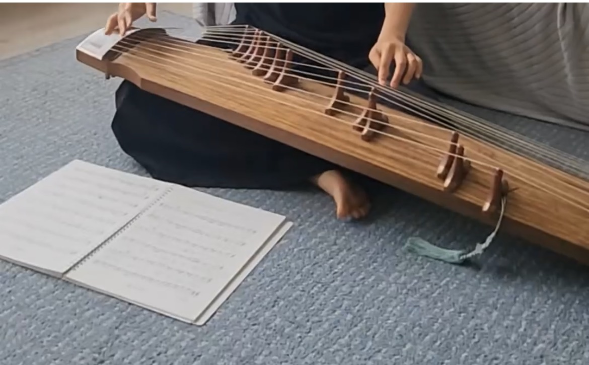
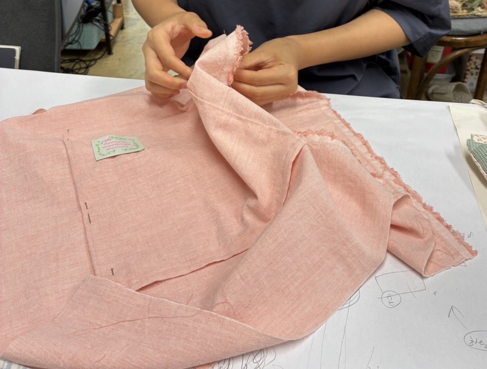
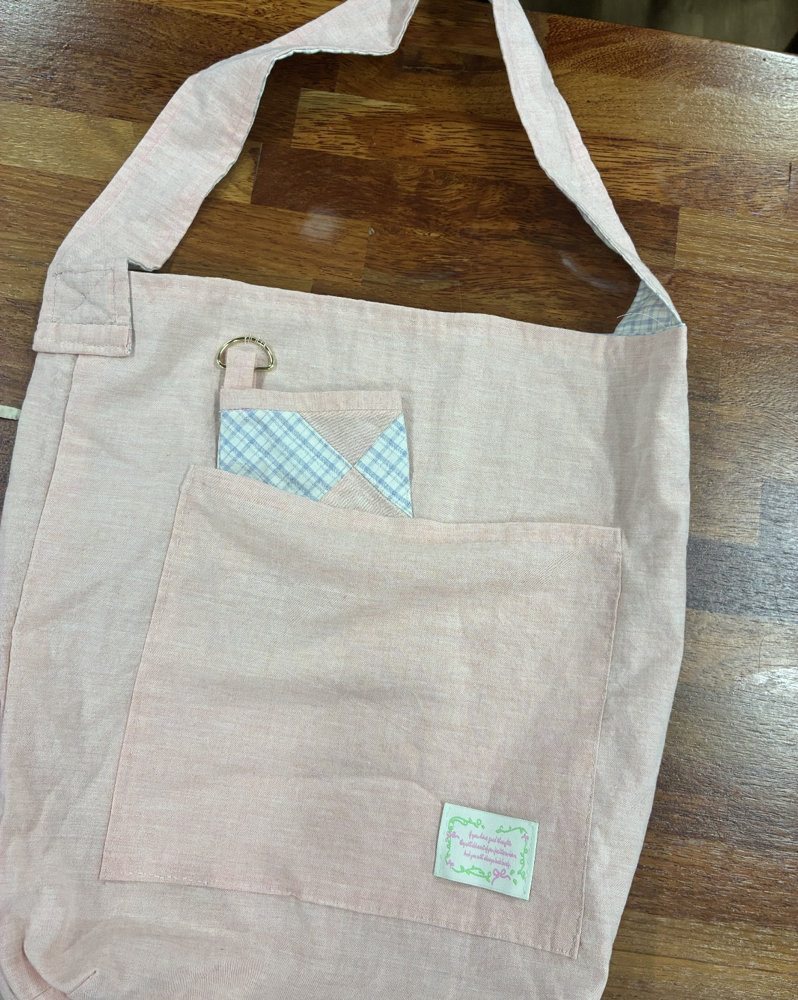
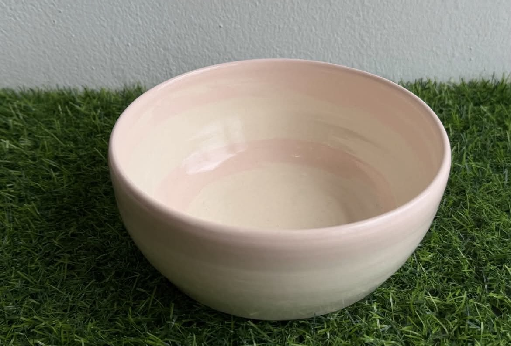
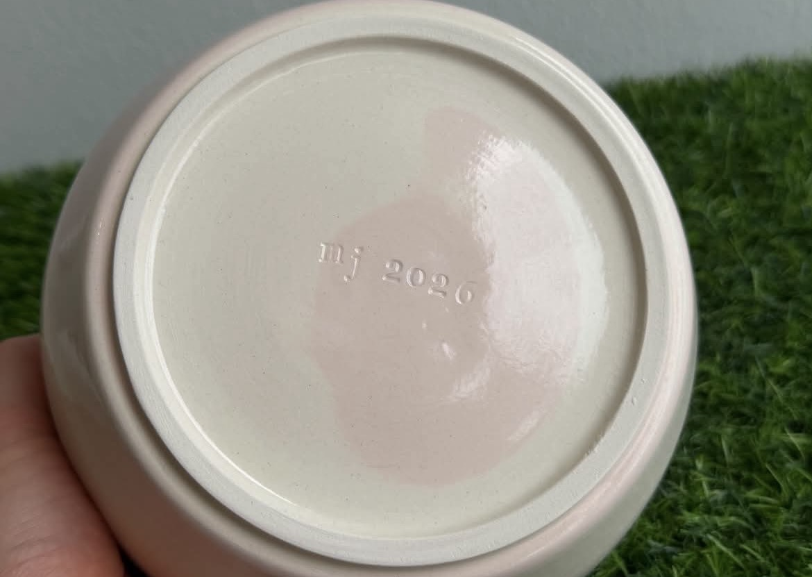
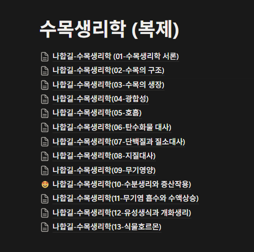
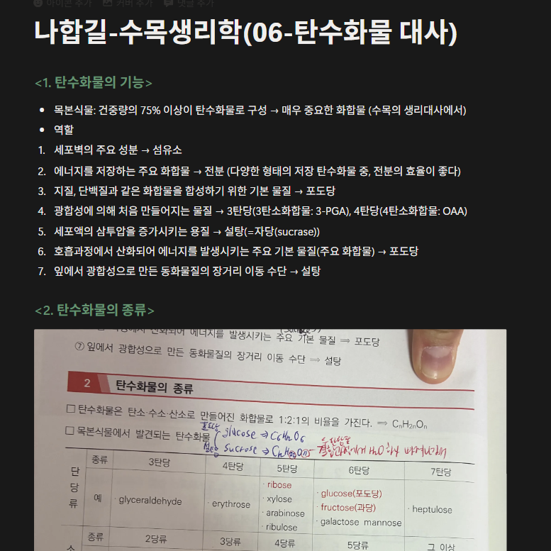
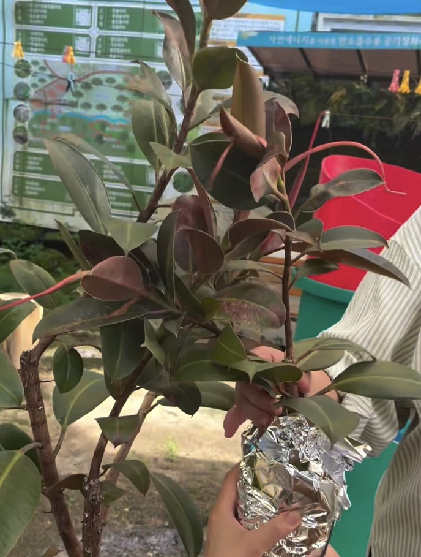
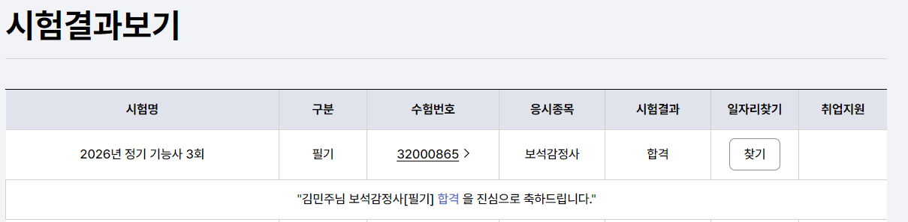
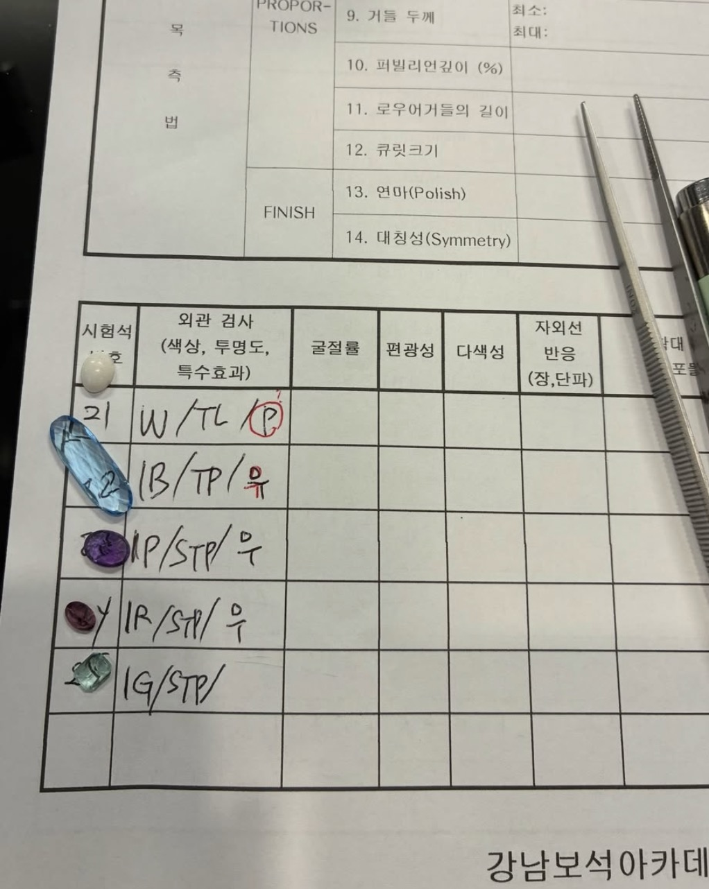

배움과 실천의 궤적:
내가 서 있는 자리에서의 자아실현
예술·지식·생태·노동의 현장에서 체득한 30%의 이론과 70%의 실천 기록
보고서의 핵심 철학 (Life Philosophy)
"예술적 선율과 과학적 탐구를 삶으로 실천한, 30%의 이론과 70%의 실천"
2026년 8월 11일 황대권 선생님과의 대화를 통해 다져진 이 신념은 본 보고서 전체를 관통하는 핵심 기둥입니다. 관념에 머무르는 공부를 넘어, 손끝으로 짓고 밭을 일구며 예술적 선율과 과학적 탐구를 삶으로 실천한 '주체적 실천가'로서의 발자취를 정리합니다.
주요 진행 과정 및 성과
1. <작은숲 피아노학원> 가야금 연주 습득
예술 / 전통가락| 기획 의도 | 한국 고유의 전통 악기인 가야금을 통해 손끝의 울림으로 민요의 가락과 정서를 직접 체율 체득하고자 기획함. |
|---|---|
| 학습 과정 | 자세 및 튕기기, 농현, 굴림 등 기초 습득 → <동요> 연주 → <아리랑> 연주 → <진도 아리랑> 습득 → <군밤타령> 경쾌한 장단 완성 → <꽃노래> 표현 연마 (단계별 11회차 완성). |
| 실천 결과 | 총 5곡 완곡 연주 능력 확보 및 국악 가락의 깊이 있는 정서적 자아 발견. |

가야금 연주 습득 과정 (아리랑 완곡 연주)
2. <설렘공방> 바느질 기초 및 에코백 완성
수작업 / 공예| 기획 의도 | 기성품 소비에서 벗어나, 손수 바느질하는 노동을 통해 일상의 실용품을 직접 만들어 쓰는 정직한 창작 기쁨 실천. |
|---|---|
| 제작 과정 | 기초 바느질 기법(홈질, 박음질) 연습 → 원단 재단 및 도안 구성 → 전 과정 손바느질 연결 및 마무리 → 손잡이 결합 및 마감 처리. |
| 실천 결과 | 기초 손바느질 기술 완숙 및 세상에 하나뿐인 나만의 패브릭 에코백 1점 완성. |

설렘공방 손바느질 과정 (기초 홈질 및 박음질)

전 과정 손바느질로 완성한 나만의 패브릭 에코백
3. <제천역근처 도자 소리 공방> 마블링 물레 도자기 성형
흙과 몰입 / 공예| 기획 의도 | 대지에서 온 '흙'이라는 자연 물질을 중심축(물레) 위에서 제어하며 몰입과 순수한 비움의 순간을 온몸으로 체감. |
|---|---|
| 제작 과정 | 색흙을 섞어 혼합 문양을 만드는 마블링 기법 구상 → 물레 성형 작업 → 중심 잡기 및 기형 잡기 → 굽 깎기, 유약 건조 및 가마 소성. |
| 실천 결과 | 자연스러운 마블링 패턴이 돋보이는 나만의 독창적인 도자기 기물 완성. |

제천역 근처 도자 소리 공방 마블링 물레 완성작

도자기 밑면 바닥 각인 (mj 2026)
4. 나무의사 과정 독학 (자연 치유 지식 구축)
국가전문자격증 과정 (2027 시험 예정)| 기획 의도 | 자연 생태계의 기둥인 나무의 생리를 과학적으로 이해하고, 병든 수목을 진단·치유하는 깊이 있는 학문적 토대 마련. |
|---|---|
| 탐구 과목 | ① 수목생리학 ② 수목병리학 ③ 산림토양학 ④ 수목해충학 ⑤ 수목관리학 (5대 핵심 과목) |
| 실천 결과 | 각 과목별 노션 정리 및 체계화, 이론 지식을 바탕으로 주변 수목과 텃밭 생태계를 관찰·진단하는 세밀한 시선 확보. |

수목생리학 노션 체계화 서머리 노트

수목생리학 탄수화물 대사 단원 필기 및 정리
5. 도시농업관리사 과정 이수 & 현장 텃밭 실천
국가자격증 과정| 기획 의도 | 도시와 농업, 인간과 자연을 잇는 매개자 역량을 기르고, 서울을 오가며 배운 이론 교육을 제천 덕산 지역 텃밭에 직접 이식함. |
|---|---|
| 진행 과정 | 서울을 왕복하며 도시농업관리사 필수 교육(이론 40시간, 실습 40시간) 이수 → 제천 덕산 지역 텃밭을 일구며 친환경 작물 재배 적용. |
| 실천 결과 | 도시농업관리사 수료 및 자격 요건 충족, 생명이 숨 쉬는 친환경 텃밭 가꾸기 일상화. |

도시농업관리사 과정 - 고무나무 취목(번식) 실습
6. 보석감정사 자격 취득 도전 (필기 합격 & 실기 준비)
전문자격 / 정교한 관찰| 기획 의도 | 지구 내면이 빚어낸 원석 결정체의 과학적 구조와 아름다움을 정교하게 관찰하고 판별하는 미시적 안목 육성. |
|---|---|
| 진행 과정 | 이론 필기시험 독학 대비 및 합격 달성 → 루페, 굴절계, 편광기, 비중액 등 활용한 보석 실기 판별 집중 실습 중 (서울 왕복, 9월 시험 대비). |
| 실천 결과 | 필기 시험 합격 달성 완료, 9월 최종 실기 합격을 목표로 정밀 감정 감각 연마 중. |

2026년 정기 기능사 3회 보석감정사 필기 시험 합격 내역

강남보석아카데미 - 보석감정사 실기 판별 및 감정서 작성 실습
철학적 이정표: 황대권 선생님과의 대화
(2026년 8월 11일 화요일)여러 분야에서의 배움과 실천을 이어가던 중, 황대권 작가님과의 깊은 대화를 통해 진행한 활동들이 통합될 궁극적인 지향점을 정리하게 되었습니다.

황대권 저서 『다시 백척간두에 서서』

2026.8.11 황대권 선생님 친필 서명 ("김민주 님께")
- 30% 이론, 70% 실천: 관념적인 공부에 그치지 않고 몸으로 부딪히며 삶 속에서 완성해 나가는 삶의 중요성 확인.
- 체계적인 기록과 공유 (야생초 도서관): 옥중 독서에서 시작하여 후학들을 위한 대안적 지식의 장을 넓혀가는 지혜 학습.
- 공간과 환경의 역설: 백척간두와 감옥이라는 한계 속에서도 야생초를 통해 내면을 확장했던 것처럼, 현재 내가 서 있는 자리에서 주체적으로 의미를 창조하는 삶 표방.